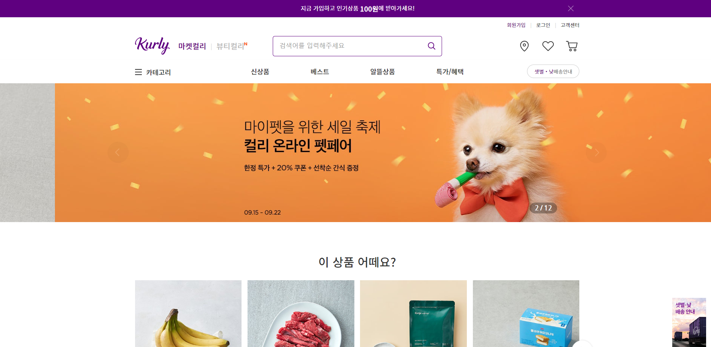

- HAN Ho-Seong
- 최고의 FE개발자가 되는 그날까지 멈추지 않겠습니다.
- Name: 한호성
- Phone: 010-8554-6674
- Address: 용인시 수지구
- 학력사항: 대학교(4년) 졸업
- 경력사항: 3년
-
핵심역량:
코딩부터 서버올리기, 테스트 등 윈도우, 리눅스 환경 등 경험이 있습니다.
백엔드, 프론트엔드, 오류에 대한 운영과의 소통 후 수정 등 다양하게 다룹니다.
새로운 개발지식을 배우고 적용시키는데 능합니다.
- 자기소개서: 펼치기 >>>
Me!!!
기본 자기소개
자기소개서
[학습내용과 학습 자세]
"학습 내용"
우선 대학교에서는 C, JAVA 기초 코딩언어로 알고리즘 문제, Matlab으로 Hill, RSA 암호화 과제, 아두이노 프로그래밍 등을 하며 기초를 쌓았습니다.
졸업 후에 국비 지원 코딩 학원에서 본격적으로 2개의 자바 웹 프로젝트를 진행하면서
- 전반적인 웹 기획과 UI 설계, erdcloud에서 DB 데이터 모델링
- Java, Spring으로 서버를 만들고 JDBC로 Oracle과 연결
- HTML, CSS로 설계 디자인, 참고사이트 따라 만들기
- JavaScript, jQuery로 이미지 슬라이드, 무한 스크롤, 웹 소켓 실시간 알람 등의 동작과 반응형을 추가구현
- 팀원들 간의 소스는 github를 통해 공유
세종텔레콤 입사 후 1년간에는
- 스프링부트를 이용하여 restAPI서버나 웹 프로젝트 만들기
- TaskExecutor나 @async를 이용한 다중스레드 구현과 스레드를 이용한 파일 자동삭제
- 리눅스 기본명령어들을 숙지하면서 우분투, hi-tam에서 war나 jar 파일을 톰캣에 올려 실행하거나 Jndi로 DB를 연결, 리눅스 환경에서 간단한 코딩
- 우분투에서 도커를 활용한 톰캣 이미지 컨테이너화하여 사용하기, 톰캣과 SQL 컨테이너 2개 활용 테스트
- ELK, 엘라스틱서치-로그스태시-파일 비트를 연결하여 로그 파일 분석, 저장하고 키바나나 리눅스 환경에서 직접 데이터모델링, 템플릿 설정 및 관리
- NodeJS, Vue를 배우며 nodejs+vue+oracle+elasticsearch, spring+vue+mysql 프로젝트 만들기, 여기서 인상 깊었던 작업은 뷰페이징처리, 데이터버스를 이용한 컴포넌트 데이터이동, FE단에서 파일다운로드, vuex를 이용한 공통 변수와 함수 사용하기, 서버 세션이 아닌 토큰을 이용한 로그인 유지 등이 있습니다.
이외에도 자바 자료구조와 알고리즘, 모던자바스크립트, 타입스크립트 기초, 리액트 등을 공부하였습니다.
"어떻게 학습했는지"
학습하는 데에 있어 두 가지에 중점을 두고 임하였습니다
첫째, 소스를 작성할 때 최대한 최신 기술을 찾고, 여러 가지 방법으로 적용해보는 것입니다. restAPI를 만들기 위해 기존 스프링이 아닌 스프링부트로 만들고, 기존 nodeJS, ejs 프로그램을 Vue를 숙지하여 깔끔하게 바꾸었습니다. 또한, 스프링부트 프로젝트를 생성하는 데에 있어 maven과 gradle 두 가지 방법으로 다 써보고 Vue프로젝트를 만들어 저가 만들 수 있는 express나 스프링부트 서버 두 가지로 연결해보기도 하였습니다.
둘째, 책이나 구글링한 내용을 자신의 소스로 저장하는 것입니다. 책에서 볼 수 있는 소스들은 1~2년만 지나도 deprecated가 뜨거나 없어져 있습니다. 구글링해서 찾는 기능들은 대부분 그대로 적용할 수 있는 형태가 아닙니다. 그래서 자신이 이해하기 쉬운 형태로 바꾸고, 지속해서 최신버전 갱신을 하여 저장한 후 필요한 작업을 할 때마다 사용하는 것이 중요하다고 생각합니다.
Education & License
학력, 교육이수 및 자격증(학사졸업, 교육이수2회)
-
속초고등학교
2011-2014
-
한국교통대학교
2014.03-2020.02
정보통신공학과 졸업
- 여러 프로그래밍 언어의 기초를 배워배우고, 간단한 알고리즘과 암호화 과제, 아두이노 코딩 등을 하였습니다.
- 학습 언어 : C++, JAVA, MatLab, Python, Arduino
-
정보처리기사
2019.11
정보처리기사 최종합격 - 한국산업인력공단
-
KH정보교육원 강남
2019.12-2020.06
UI/UX 스마트 콘텐츠 융합 응용 SW
- 자바웹 개발자가 되기위한 전반적인 것들을 6개월 간 배웠습니다. 자바의 기초부터 스프링 프레임워크, DB 등 BE 관련내용부터 FE html, css, javaScript, jsp 초기단계까지 학습하였고, 단체프로젝트2회 기획수립, 요구사항정의, 테이블정의 및 erdcloud제작, 개발 등 진행하였습니다.
- 사용 언어 : JAVA, JavaScript
- 데이터베이스 : Oracle
- 학습 내용 : Servlet, SpringFramework, JDBC, Mybatis, Ajax, HTML, CSS, JSP
- 사용 툴 : eclipse, sqldeveloper, maven
-
프로젝트 : ULTARI(반려동물 연결사이트),
BUCKETSTORY(버킷리스트 공유SNS)-포폴수록
-
메가스터디IT아카데미
2022.07-2022.11
Front-End 실습형 Curriculum
- FE개발자 양성과정으로 HTML, CSS, JavaScript 기초 외에도 ES6, 반응형, SASS, React프레임워크 등 심화과정을 추가로 배웠고, 서버는 닷홈 웹호스팅과 MYSQL를 받아 PHP로 통신하였습니다. 프로젝트는 마켓컬리를 벤치마킹하여 만들었습니다.
- 사용 언어 : JavaScript
- 데이터베이스 : MySQL
-
학습 내용 : HMTL5, CSS3, SASS, JavaScript, jQuery React.js, PHP, Apach Server,
MYSQL
웹표준, 웹접근성, 크로스브라우징, 반응형 웹개발, JavaScript ES5 & ES6 & jQuery 하드코딩 웹개발 - 사용 툴 : Visual Studio Code, 닷홈
-
프로젝트 : 마켓컬리(기본)-포폴수록,
마켓컬리(React)-포폴수록
Work Experience
경력사항(총 3년 4개월)
세종텔레콤 / 부가서비스개발
2020.08 - 2021.11(1년 4개월)
- 담당업무 : 가상번호조회 웹, CDR 조회 웹 개발 등
- 퇴사사유 : 업직종 전환
- 사용기술 : Java, Spring, SpringBoot, JavaScript, Node.js, Vue.js, Linux, ELK
- DataBase : Oracle, MySQL, Elasticsearch
- 협업 : atlassian, SVN
- 학습 : SpringBoot, Node.js, restAPI, Vue.js, Linux, Ubuntu, Docker
-
1. Linux환경에서 서버를 올리거나 수정 및 DB작업
2. 메시지관련 API 로그관리 ELK활용
3. 통화기록 및 메시지 로그 조회 웹개발 개인프로젝트
-
프로젝트))
- ELK로그분석 조회웹
- 가상 번호 조회 웹
- 통화기록 조회 웹
SBS아카데미컴퓨터아트학원 / 시간강사
2022.07 - 2022.11(5개월)
- 담당업무 : jQuery, javaScript에 대한 기초 개념과 웹개발 적용 실습에 대한 강의
- 퇴사사유 : 업직종 전환
- 사용기술 : JQuery, JavaScript
- jQuery수업내용 : javaScript의 DOM의 구조와 원리부터 jQuery 탐색자, 메소드 사용법, 활용 실습
- javaScript수업내용 : 웹표준 ES5부터 최신버전(ES2020)까지 문법정리 및 간단한 실습
엑스퍼트컨설팅 / IT전략실
2023.03 ~ 2024.09(1년 7개월)
- 담당업무 : 회사 모바일 홈페이지 및 교육, 설문, 채용 application 설계, 개발, 유지보수
- 퇴사사유 : 이직
- 사용기술 : JavaScript, React.js, Vue.js, Svelte
- 협업 : Confluence, GitLab
- 학습 : Next.js, TypeScript
-
1. 다양한 SPA 설계, 개발, 유지보수
2. 입사지원 페이지 커스텀 js, 여러 사이트 js 작업
3.
-
프로젝트))
- 엑스퍼트 모바일 홈페이지
- HR교육 소개 및 수강신청 사이트
- 회사에서 진행하는 HR 채용 및 교육 설문조사
- HR교육용 기록 웹사이트
Portfolio
지금까지의 개인/단체 프로젝트
추후 수정 및 오류해결 후 단계적으로 웹페이지로 올릴예정.
[Github Link]
버킷리스트 - 팀
[프로젝트기간] 2020.05-2020.06
[목표 및 요약]
교육원 자바과정에서의 두 번째 프로젝트
1. 자기가
하고싶고 이루고 싶은 버킷리스트를 등록하고 공유한다.
2. 타임라인에서 자신의 버킷이나
다른 사람의 버킷을 가져와서 이루는 과정을 블로그형식을 작성한다.
3. 기업에서 제휴하여
버킷을 이루는 것을 도와준다. ex) 요리교습 같은 실습 지원이나 숙박, 여행사 등과 연계하여
비용 견적서를 내줌
[활용언어]
Java, SpringFramework, OracleDB, HTML, CSS, JSP, JavaScript,
Jquery, JSTL
[주요기능]
1.메인 및 타임라인 페이지 제작 및 디자인
2.창크기에 따른 반응형UI
3.좋아요, 위시, 버킷등록
4.게시글 태그 기능
5.버킷카테고리별 사이드 메뉴바
6.검색API를 이용하여 태그, 회원, 버킷, 기업 네 가지로 검색결과 표출
7.웹소켓을 이용한 실시간 알람
[Github Link]
개인/단체톡
[프로젝트기간] 2021.12-2021.01
[목표 및 요약]
회사 입사 후 스프링부트를 숙지하면서 만든 첫 개인프로젝트로
부트를 최대한 활용하여 스프링에서 복잡했던 것을 최대한 바꾸고, 웹소캣을 최대한 활용할 수
있는 카카오톡과 유사한 프로그램을 만들면서 여태껏 해보지 못한 기능들을 최대한 해 볼 수
있게 개발하였습니다.
[활용언어]
Java, SpringFramework, SpringBoot, MySQL, HTML, CSS, JSP,
JavaScript, Jquery, JSTL
[주요기능]
1.스프링부트의 활용(mvc설정, DB와 mybatis설정 및 Alias관리)
2.인터셉터를 이용한 AOP 활용(요청마다 세션 연장)
3.@Async 다중스레드의 활용(세션시간 종료 시 자동로그아웃)
4.웹소켓을 최대한 활용한 실시간 반응(실시간 채팅)
5.채팅 반응성
6.파파고번역 기능 추가(영 -> 한, 한 -> 영)
[Github Link]
뷰/기본
[프로젝트기간] 2021.03-2021.03
[목표 및 요약]
리눅스와 nodejs, 뷰를 처음으로 접하여서 만든 프로젝트로
기본기능 조회, 수정, 삭제를가진 restAPI 스프링부트, express 둘 다에 빌드하여서
개발하였습니다.
[활용언어]
SpringBoot, Express,
Vue(Axios, Router), JavaScript, BootStrap
[주요기능]
1. vue 기본 문법 및 CRUD API요청(멘트관리, 유저추가)
2.
Spring, Express 서버에 각각 빌드 및 url매핑
[Github Link]
ELK로그분석 조회웹
[프로젝트기간] 2021.03-2021.05
[목표 및 요약]
express API를 vue를 이용하여 SPA로 바꾸는 작업을 하였습니다.
메시지관련 로그를 검색파라미터 또는 엑셀파일로 다중 검색하는 웹으로 ELK를 이용한 필터링 및
데이터 작업을 진행하였습니다.
[활용언어]
Express, Vue(axios, Router, Vuex, cookies), JavaScript, BootStrap,
ELK
[주요기능]
1. 부트스트랩 디자인의 기초
2. 뷰 컴포넌트마다의 데이터 이동/공유하기
3. 뷰 디렉티브 활용
4. jwt기반 토큰을 이용한 사용자 인증
5. 뷰 컴포넌트 페이징 처리
6. FE에서 업로드/다운로드
7. vuex 데이터 유지 / 공통 메소드 처리

[Github Link]
가상번호 조회 웹
[프로젝트기간] 2021.06-2021.07
[목표 및 요약]
가상 번호와 일정, 멘트파일 등 여러 객체를 조회, 입력, 수정,
삭제를 하여야 하고, 조합하여 Set등록을 하여야 한다. 서버의 설정에 따라서 데이터를 요청할
때는 AES암호화가 필요할 수 있어서 서버암호화 확인 및 파라미터 암호화를 추가하였습니다.
[활용언어]
Java(API), Vue(Axios, Router, Vuex, cookies), JavaScript, BootStrap
[주요기능]
1. API요청 시 AES128 암호화
2. 이벤트버스를 이용한 컴포넌트로 데이터 이동 및 메소드실행
[Github Link]
통화기록 조회 웹
[프로젝트기간] 2021.08-2021.09
[목표 및 요약]
통화기록 조회 웹으로 vue 내부에서 토큰을 만들어서 서버에 저장을
하고, 서버에서 조회 시에 결과값이 XML로 반환되어 따로 매핑을 해줬습니다.
[활용언어]
Java(API), Vue(Axios, Router, Vuex, cookies, jsonwebtoken),
Javascript, BootStrap
[주요기능]
1.내부 토큰화를 이용한 화면단에서 로그인 유지시간 관리
2.API요청
XML결과 값 매핑
[Github Link]
리액트 실습
[프로젝트기간] 2022.03-2022.04
[목표 및 요약]
리액트를 배우고, 전체적인 틀을 요약한 간단한 CRUD사이트
실습하였습니다.
[활용언어]
Java, SpringBoot, React(Axios, Redux), Javascript
[주요기능]
1. axios를 이용한 API 입출력(CRUD)
2. 컴포넌트 활용
3. Redux를 이용한 데이터 관리

[Github Link]
FE교육 마켓컬리(PHP)
[프로젝트기간] 2022.10-2022.11
[목표 및 요약]
FE교육과정, 개인 포트폴리오로서 마켓컬리를 벤치마킹하여 화면 및
간단한 API를 넣어 제작하였습니다.
[활용언어]
PHP, JavaScript(jquery), SCSS
[주요기능]
1. 마켓컬리 화면 및 동작들 구현하기
2. PHP-SQL를 이용한 로그인, 회원가입
3. SCSS를 이용하여 CSS 작성하기
Skill
보유 기술
Language
JAVA
JavaScript
SQL
DataBase
Oracle
MySQL
Elasticsearch
FrontEnd
HTML5
CSS3
SCSS
jQuery
JSP
PHP
Vue.js
React.js
BackEnd
Spring
SpringBoot
Node.js
Tool
STS
Visual Studio Code
Linux
Ubuntu
Docker
AND
Git
SVN
Atlassian